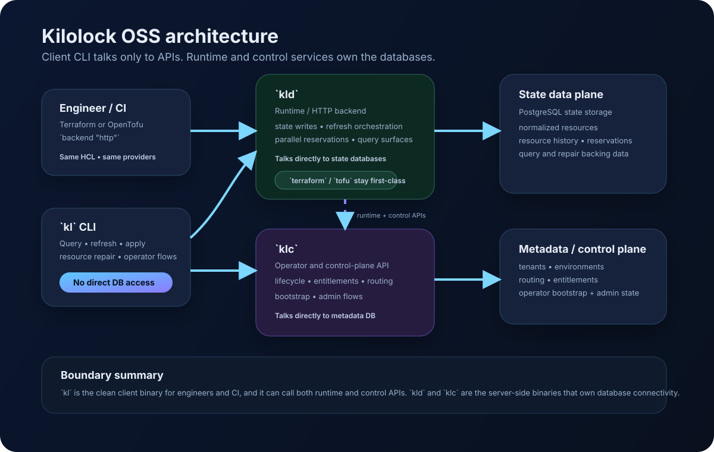
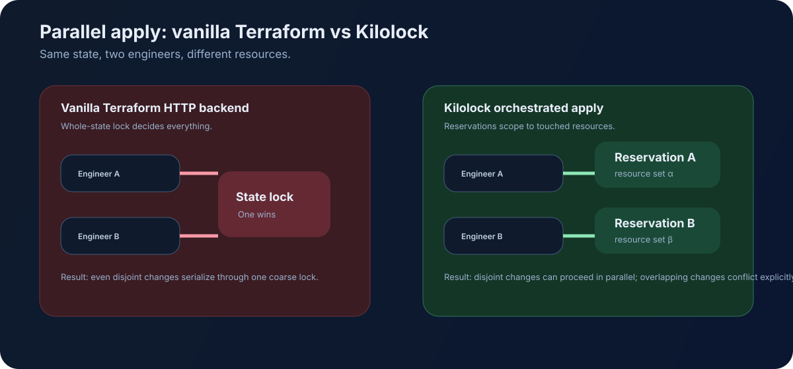

Main value
The headline benefit is not “SQL is neat.” It is letting more engineers work safely on the same large state without forcing everything through a single coarse lock.
Self-hosted Terraform/OpenTofu state engine
Kilolock replaces the flat .tfstate blob with a normalized
PostgreSQL graph so teams can query state, inspect drift, repair a single
resource, and coordinate parallel work on large shared state with much
better visibility than a whole-workspace lock.
The headline benefit is not “SQL is neat.” It is letting more engineers work safely on the same large state without forcing everything through a single coarse lock.
Existing Terraform and OpenTofu workflows still talk to an HTTP backend. Same HCL, same providers, same CLI habits — different engine under the state.
This repository is the OSS core: kl,
kld, klc, local compose,
query/repair flows, and operator APIs.
Sometimes the infrastructure really is tightly coupled. Forcing it into many smaller Terraform states can create a distributed monolith where the dependency graph still exists, but now it is harder to reason about and harder to change safely.
In those cases, a large shared state can be the honest representation of the system. Kilolock is built for that reality: better collaboration on one large state, better visibility, and better repair workflows when something goes wrong.
Client workflows stay API-only. Runtime and control services own the private databases.

The technical backend work matters because it removes a people bottleneck: more engineers can work on the same large state without queueing behind one lock.

Run backend-native queries over normalized resources, dependencies, outputs, and drift.
Refresh state out of band and inspect drift without paying full plan refresh every time.
Use file- and target-scoped workflows with reservation-aware orchestration.
Preview history and repair a single resource’s state bookkeeping without blunt whole-state rollback.
Run self-hosted operator workflows for lifecycle, routing, entitlements, and control operations.
The concurrency story is real: disjoint changes on large shared state are the center of the design.
docker-compose up --build -d
Then point Terraform’s backend "http" at
http://localhost:8080/states/<workspace>/<environment>/<state>.